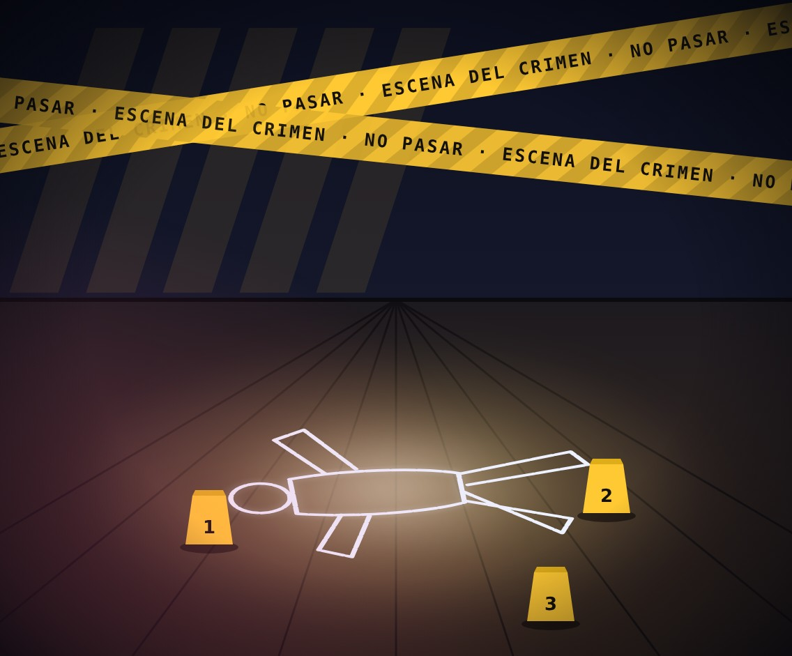
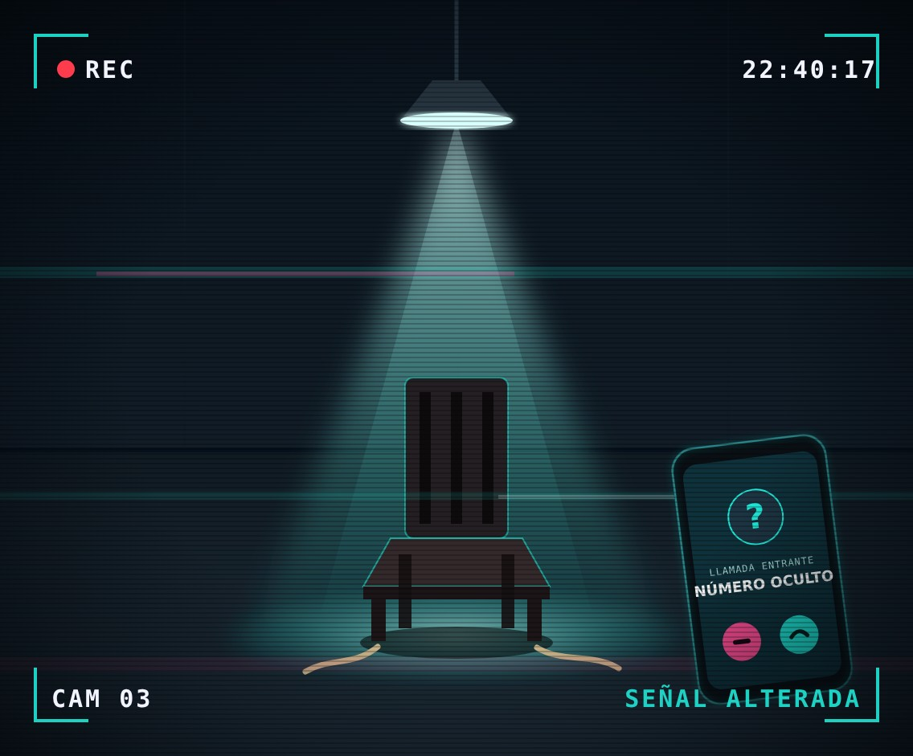

>
Pistas halladas: 0
--:--:--
Elige tu investigación
Tres delitos, tres expedientes abiertos. Interroga a los sospechosos, reúne las pruebas y acusa al culpable.
EXPEDIENTE 001ABIERTO
 CONFIDENCIAL
CONFIDENCIAL
ROBOS
Una pieza invaluable desapareció durante la noche. Interroga a los sospechosos y descubre al culpable.
- DELITO
- Robo
- SOSPECHOSOS
- 3
- PISTAS
- 0 / 3
Abrir expediente →
EXPEDIENTE 002ABIERTO

CONFIDENCIALAsesinatos
Una víctima, varios sospechosos y una sola verdad. Reúne las pruebas antes de acusar.
- DELITO
- Asesinato
- SOSPECHOSOS
- 3
- PISTAS
- 0 / 3
Abrir expediente →
EXPEDIENTE 003ABIERTO

CONFIDENCIALSecuestros
Dos investigaciones: un científico desaparecido de su laboratorio y el hijo de un multimillonario en el colegio.
- DELITO
- Secuestro
- INVESTIGACIONES
- 2
- PISTAS
- 0 / 6
Abrir expediente →